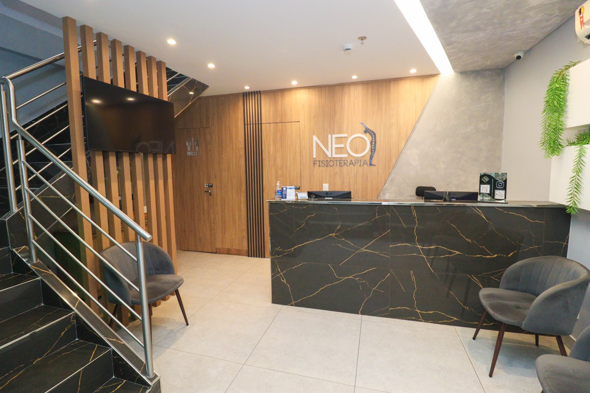
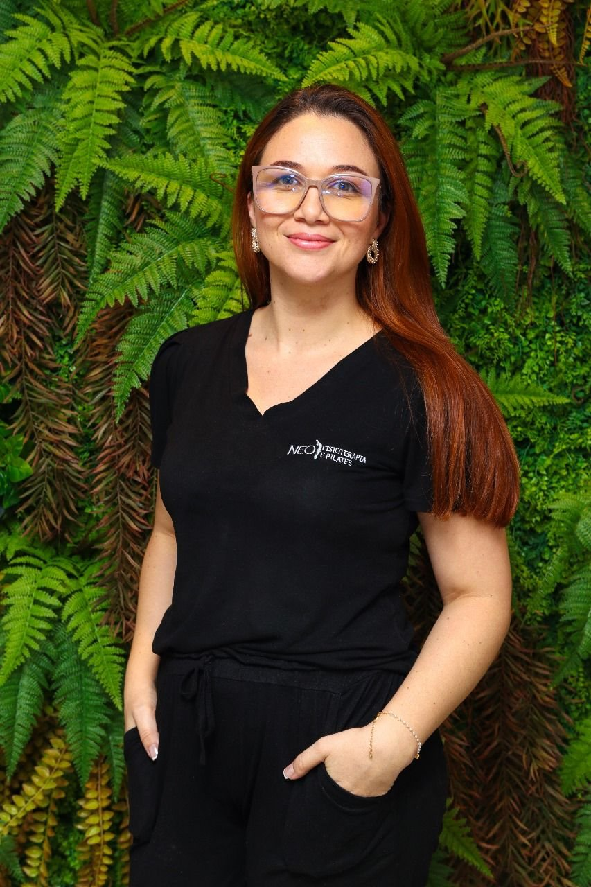
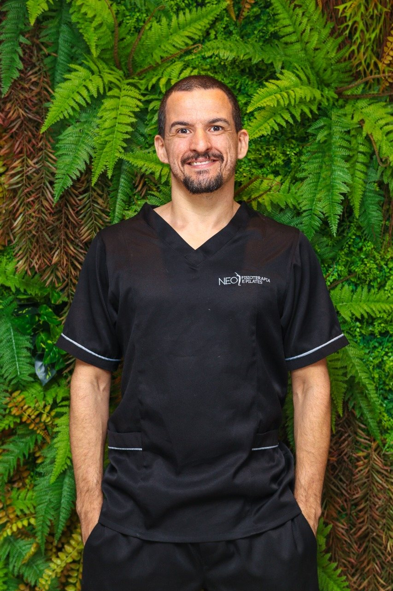

Pilates em Águas Claras
Aulas orientadas para melhorar força, mobilidade, postura e consciência corporal com acompanhamento profissional.

Diferenciais
Estrutura completa para facilitar seu tratamento.
Convênios
PLANOS DE SAÚDE NEOFISIOTERAPIA
Veja a lista de convênios da Neo e fale com a equipe para confirmar a cobertura para o seu atendimento.
- AFEB BRASAL
- AFFEGO
- ANAFE SAÚDE
- BACEN
- CAESAN
- CÂMARA DOS DEPUTADOS - PRÓ-SAÚDE
- CARE PLUS
- CASEC
- CASEMBRAPA
- CNTI
- CONAB
- FAPES
- FASCAL
- FUSEX
- GAMA SAÚDE
- GDF/INAS
- GRAVIA
- LIFE EMPRESARIAL
- LUMIA
- OMIN
- ETROBRAS
- PF SAÚDE
- PLAN-ASSISTE
- PLAS/JMU
- PRÓ-SOCIAL (TRF)
- PROASA
- REAL GRANDEZA
- SAÚDE CAIXA
- SERPRO
- SIS SENADO
- STF
- STJ
- TJDFT
- TRE
- TRT SAÚDE
- TST
Quer confirmar seu convênio?
Preencha nome e telefone para abrir o WhatsApp da clínica com a mensagem pronta.
Entrar em contatoQuando procurar
Quando procurar pilates clínico?
Dor nas costas
Para quem sente desconforto recorrente e busca melhorar postura e controle corporal.
Fraqueza muscular
Trabalho progressivo de força com orientação durante os exercícios.
Rigidez e pouca mobilidade
Exercícios para ampliar mobilidade e facilitar movimentos da rotina.
Postura
Acompanhamento para melhorar alinhamento, respiração e percepção do corpo.
Prevenção de lesões
Fortalecimento e controle de movimento para reduzir sobrecargas.
Retorno à atividade
Evolução gradual para retomar rotina e exercícios com mais segurança.
Tratamentos
Tratamentos de fisioterapia disponíveis
Especialidades para reabilitação, melhora da mobilidade, controle da dor e recuperação funcional.
Cuidado para dores, alterações musculoesqueléticas, postura e limitações de movimento.
Reabilitação após lesões, traumas, imobilizações e pós-operatórios.
Cuidado para saúde pélvica, função urinária, saúde íntima e acompanhamento gestacional.
Suporte no preparo e na recuperação de alterações e cirurgias ortognáticas.
Tratamento para disfunções temporomandibulares, dor facial e tensão mandibular.
Reabilitação para tonturas, desequilíbrio e queixas relacionadas ao sistema vestibular e labirinto.
Corpo clínico
Profissionais para acompanhar seu tratamento.
Equipe da Neo com atuação em fisioterapia, Pilates, RPG e acupuntura.
Dr. Arley
Responsável Técnico
Dr. Cleber
Fisioterapia Ortopédica e RPG

Dra. Ially
Fisioterapia Ortopédica
Dra. Jackline
Pilates

Dr. Renan
Fisioterapia Ortopédica e Acupuntura
Conheça o espaço
Conheça nossos ambientes
A Neo reúne recepção, consultórios, salas de fisioterapia e cinesioterapia para avaliações, reabilitação e acompanhamento individualizado.
Como funciona
Um atendimento pensado para acompanhar sua evolução.
Do primeiro contato à continuidade do tratamento, a proposta é entender sua queixa, definir prioridades e ajustar o plano conforme sua resposta clínica.
Avaliação inicial
Escuta da queixa, avaliação funcional e definição dos objetivos de cuidado.
Plano individualizado
Escolha dos recursos terapêuticos mais adequados para o seu caso.
Acompanhamento contínuo
Progressão das sessões conforme sua dor, mobilidade, força e rotina.
Localização
Atendimento em Águas Claras
Rua 5 Norte, Lote 3, Loja 16, Térreo, Albany Medical Center, Águas Claras, Brasília - DF.
Foto de fundo: Agência Brasília, CC BY 2.0
Dúvidas frequentes
O que você precisa saber antes de agendar.
Reunimos as principais dúvidas para facilitar seu primeiro contato com a equipe de fisioterapia da Neo.
Quais atendimentos estão disponíveis?
A Neo realiza Pilates solo e aparelhos, Força, Mobilidade, Postura. A equipe orienta a melhor opção após avaliação.
A clínica atende convênios?
Sim. A Neo atende +45 convênios. Ao entrar em contato, a equipe confirma a cobertura e orienta sobre o agendamento.
Preciso fazer avaliação antes de iniciar?
Sim. A avaliação inicial ajuda a entender sua queixa, seus objetivos e o melhor caminho para o tratamento.
Como faço para agendar?
Clique em Agendar e preencha o formulário com nome e telefone. Ele abre uma conversa no WhatsApp da clínica com a mensagem pronta.
Onde fica a Neo Fisioterapia e Pilates?
A clínica fica na Rua 5 Norte, Lote 3, Loja 16, Térreo, no Albany Medical Center, em Águas Claras, Brasília - DF.